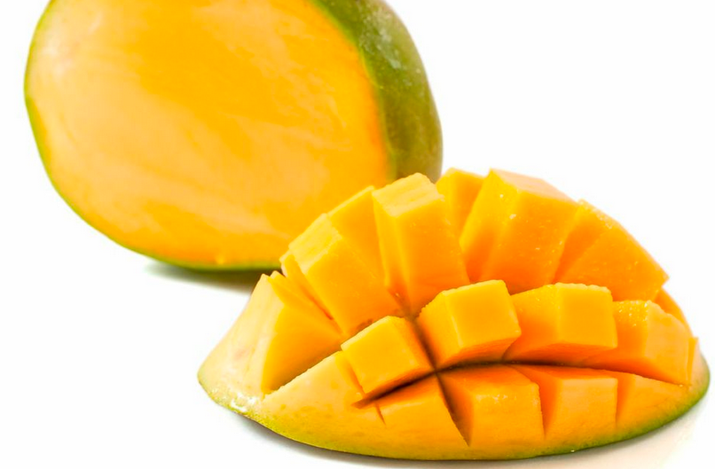

tentangbuah.com
Mangga

Mangga adalah jenis buah-buahan, atau buah yang dihasilkan
dari pohon buah Mangga. Buah Mangga biasanya berwarna merah kulitnya jika
masak dan (siap dimakan), namun bisa juga kulitnya berwarna hijau atau
kuning. Kulit buahnya agak lembek, daging buahnya keras. Buah ini memiliki
beberapa biji di dalamnya.
Orang mulai pertama kali menanam Mangga di Asia Tengah. Kini Mangga berkembang
di banyak daerah di dunia yang suhu udaranya lebih dingin. Nama ilmiah
pohon Mangga dalam bahasa Latin ialah Malus domestica. Mangga
budidaya adalah keturunan dari Malus sieversii asal Asia Tengah,
dengan sebagian genom dari Malus sylvestris (Mangga hutan/Mangga
liar).
Kebanyakan Mangga bagus dimakan mentah-mentah (tak dimasak), dan juga
digunakan banyak jenis makanan pesta. Mangga dimasak sampai lembek untuk
dibuat saus Mangga. Mangga juga dibuat untuk menjadi minuman sari buah Mangga.
Khasiat Mangga
- Meningkatkan daya memori
- Baik untuk usus
- Meningkatkan sistem kekebalan tubuh
- Baik untuk jantung
- Menurunkan tekanan darah
- Mengurangi risiko diabetes
Daftar Harga
| Jenis Mangga | Harga | |
|---|---|---|
| Per Kilo | Per Biji | |
| Mangga Manalagi | 50.000 | 5.000 |
| Mangga Fuji | 60.000 | 6.000 |
| Mangga Anna | 70.000 | 7.000 |
| Mangga Merah | 55.000 | 5.500 |